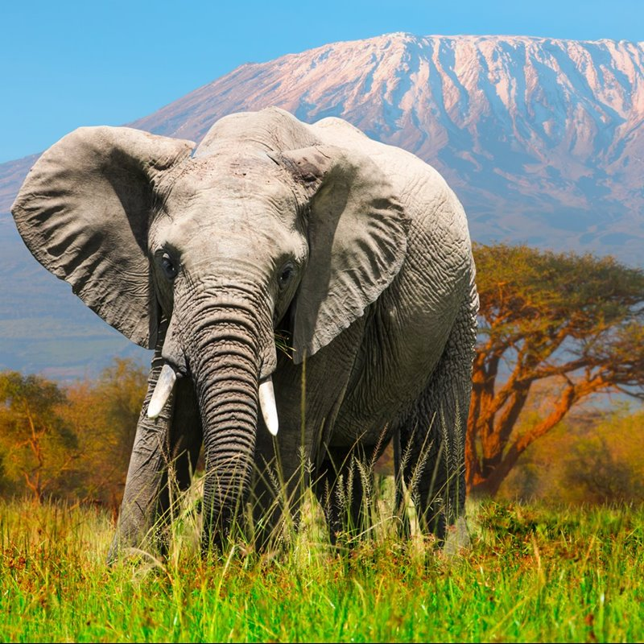
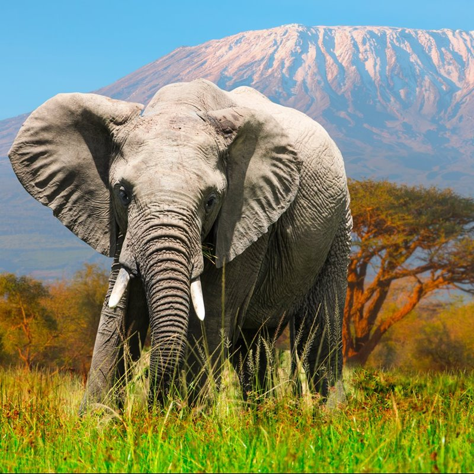
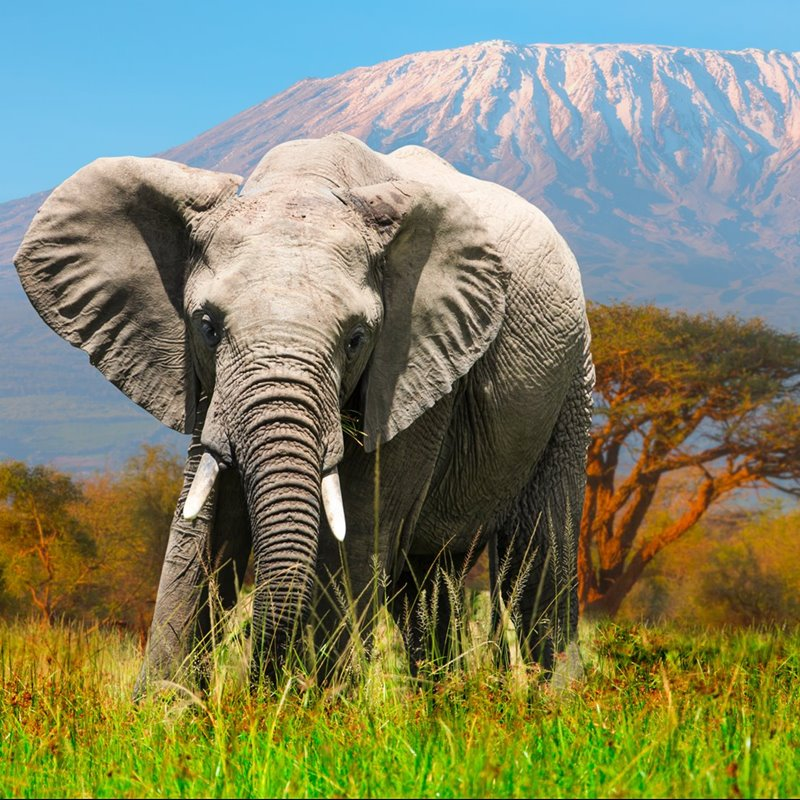

Animales en peligro de extincion
Nombre:Elephantidae
Desde que la vida surgió en la Tierra, su fauna se ha transformado en muchas ocasiones. Durante miles de años y por diversas razones, se han producido 5 grandes extinciones de las especies que han poblado la Tierra: son las conocidas como las 5 extinciones masivas. En la actualidad, y debido a la acción de los seres humanos, el planeta está al borde de los que los científicos denominan la Sexta Gran Extinción. (Lista de especies afectadas en España, Mexico, Perú y el mundo).
Nombre: Ailuropoda melanoleuca
La población actual del oso panda gigante ha sido estimada en unos1.864 individuos, sin contar a los individuos menores del año y medio de edad. Aunque, si tenemos en cuenta sólo a los individuos adultos que son capaces de reproducirse, la población descendería por debajo de los 1.000 individuos.Por otro lado, la población de pandas está fragmentada en subpoblaciones. Estas subpoblaciones se encuentran aisladas a lo largo de varias montañas en China, se desconoce el grado de conectividad entre ellas y el número de individuos exacto que comprende cada una de las subpoblaciones.

Nombre: Testudines
En el Perú existen cinco especies de tortugas marinas que están en situación vulnerable y en peligro de extinción: tortuga dorso de cuero (Dermochelys coriacea), pico de loro (Lepidochelys olivacea), carey (Eretmochelys imbricate), tortuga verde (Chelonia mydas), y tortuga cabezona (Caretta caretta). Estas cumplen un rol en el ecosistema y su desaparición podría causar graves problemas, afectando incluso actividades económicas importantes como la pesca y el turismo.

Nombre: Phocoena sinus
La vaquita, una pequeña marsopa que sólo se encuentra en el Golfo de California se encuentra en peligro de extinción, según explican los científicos. Tan sólo quedan unos 30 ejemplares según unas muestras acústicas que contó los ruidos de los animales el verano pasado.En 2015, una encuesta estimó que quedaban unas 60 vaquitas. Ahora están muriendo porque quedan atrapadas en redes de enmalle ilegales.
Nombre: Hippopotamus amphibius
Actualmente quedan de 115000 a 130000hipopótamos vivos a día de hoy, teniendo África oriental y meridional las comunidades más importantes.Cuando se trata del comercio mundial de vida silvestre, los conservacionistas tienen una larga lista de cosas por las que preocuparse. Puede ser que necesite añadir a los hipopótamos a esa dolorosa lista.